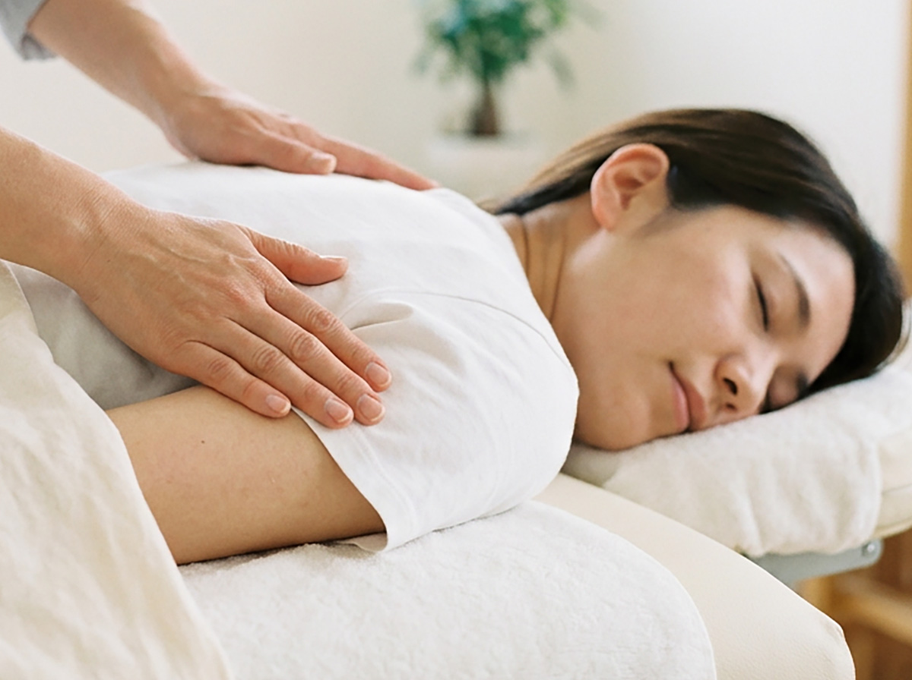
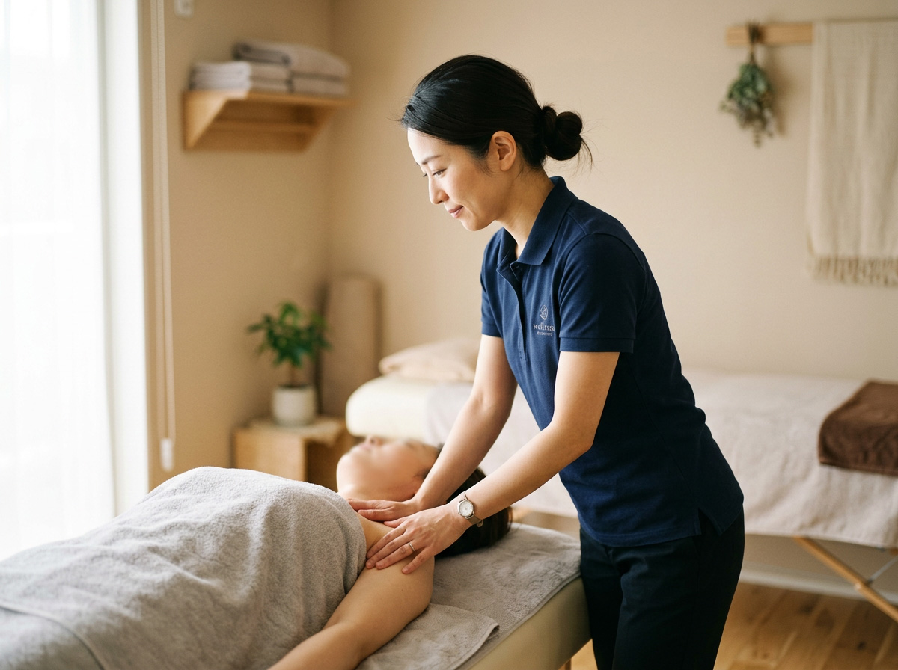
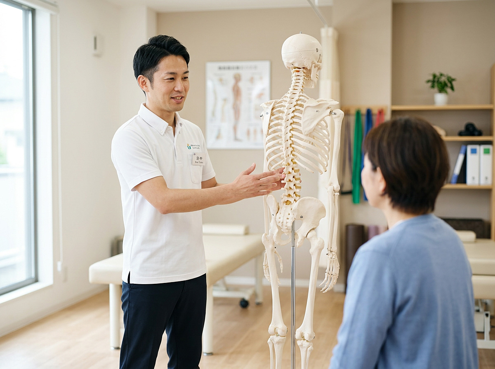
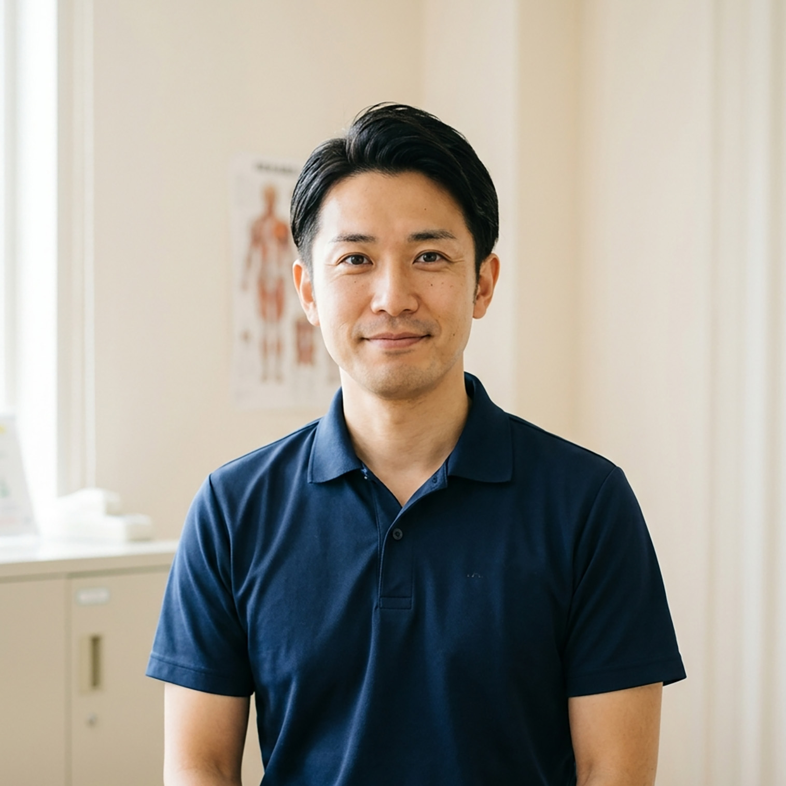

40代・女性・会社員
長年の肩こりが軽くなりました
★★★★★
デスクワークで肩こりがひどく、頭痛もありましたが、通ううちに肩が軽くなり、頭痛の回数も減りました。自律神経の話も分かりやすく、安心して通えています。
Seitai Salon
のぞみ整体
Autonomic Nervous System Care
肩こり・腰痛・めまい・更年期障害・交通事故後の不調など、 「なんとなくつらい」を根本から整える整体です。
「病院では異常なしと言われたけれど、なんとなくつらい…」
そんな自律神経の乱れからくる不調でお悩みではありませんか？
これらの症状は、自律神経の乱れが関係している場合があります。
のぞみ整体では、丁寧なカウンセリングと検査で原因を一緒に探っていきます。

ボキボキしない、やさしい刺激の整体です。お子さまからご高齢の方まで、安心して受けていただけます。

女性特有のお悩みや、更年期による不調なども、女性施術者が丁寧にお伺いします。男性施術者が苦手な方もご安心ください。

院長・スタッフともに理学療法士の国家資格を保有。医療現場での経験を活かし、根拠に基づいたアプローチを行います。
| コース | 内容 | 料金（税込） |
|---|---|---|
| 初回カウンセリング＋施術（60分） | カウンセリング・検査・自律神経バランスチェック・整体施術。 | ¥9,000 / 60分 |
| 2回目以降（40分） | 状態に合わせた整体施術とセルフケアのアドバイス。 | ¥7,000 / 40分 |
| 2回目以降（60分） | じっくりと全身を整えたい方向けのロングコース。 | ¥9,000 / 60分 |
※初回はカウンセリング・検査にお時間をいただきます。
※症状やご希望に応じて、最適なコースをご提案いたします。
40代・女性・会社員
長年の肩こりが軽くなりました
★★★★★
デスクワークで肩こりがひどく、頭痛もありましたが、通ううちに肩が軽くなり、頭痛の回数も減りました。自律神経の話も分かりやすく、安心して通えています。
50代・女性・主婦
更年期の不調が楽に
★★★★★
更年期に入ってから、めまいや動悸がつらかったのですが、施術を受けると体も心も落ち着きます。女性の先生がいるのも心強いです。
30代・男性・会社員
事故後の不調が改善しました
★★★★★
交通事故のむち打ち後から、天気が悪いと体調が崩れていましたが、自律神経を整える施術を受けてから、かなり楽になりました。

院長
理学療法士／整体師／自律神経ケアアドバイザー
経歴：病院・クリニックでのリハビリテーション業務を10年以上経験。
「つらいけれど、どこに相談したらいいか分からない」そんな自律神経の不調で悩む方の力になりたいと思い、のぞみ整体を開院しました。症状だけでなく、その背景にある生活やお気持ちにも寄り添いながら、少しずつでも「楽になってきた」と感じていただけるよう、丁寧にサポートいたします。
A. ボキボキと音を鳴らすような施術は行いません。やさしい刺激で、自律神経にアプローチしていきますので、ご安心ください。
A. 症状や生活スタイルによって異なりますが、初めの1〜2ヶ月は週1回、その後は2〜4週間に1回のペースを目安にご提案することが多いです。
A. 自費診療のみとなっております。保険診療ではカバーしきれない、自律神経の不調に対するケアを行っています。
A. 動きやすい服装でお越しください。スカートや締め付けの強い服装はお避けください。お着替えをお持ちいただいても構いません。
A. 事前にご相談いただければ、お子さま連れでのご来院も可能です。予約状況により個別に調整いたします。
院名：のぞみ整体
住所：兵庫県神戸市〇〇区〇〇町〇-〇
アクセス：JR〇〇駅から徒歩〇分／バス停「〇〇」から徒歩〇分
| 曜日 | 診療時間 |
|---|---|
| 月〜金 | 9:00〜13:00／15:00〜19:00 |
| 土 | 9:00〜14:00 |
| 休診日 | 日曜・祝日 |
※完全予約制のため、事前のご予約をお願いいたします。
お車でお越しの方は、近隣のコインパーキングをご利用ください。
詳しい道順は、ご予約時にご案内いたします。
「この不調は、自律神経のせいかもしれない…」
そう感じたら、一度ご相談ください。
無料相談も承っております。
※施術中はお電話に出られない場合がございます。その際は折り返しご連絡いたします。